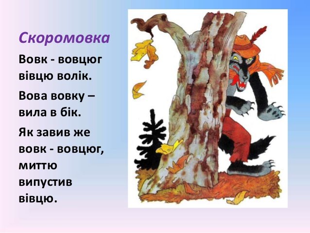
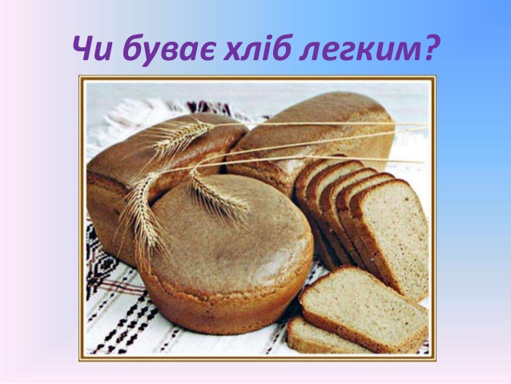
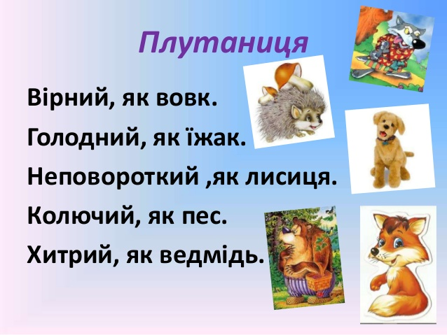

Усмішка

Скоромовка Вовк - вовцюг вівцю волік. Вова вовку – вила в бік. Як завив же вовк - вовцюг, миттю випустив вівцю.
Ребус
Чи буває хліб легким?

Плутаниця.
Вірний, як вовк.
Голодний, як їжак.
Неповороткий ,як лисиця.
Колючий, як пес
Хитрий, як ведмідь.
Вірш Гани Чубач. Виконує дитячий ансамбль "Зернятко"
Колобок
Українська народна казка про тварин